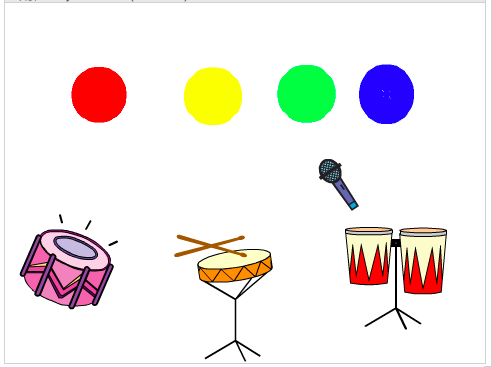
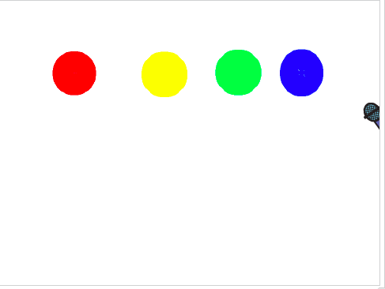
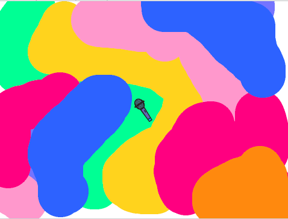
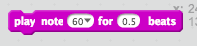
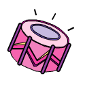
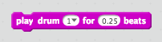

In this codelab, you'll make a band.
Open the starter project and click Remix.
Paint your background with a few different colors. Each color will play a different note. There are lots of good ways to do this, here are a few simple examples:
 The microphone should follow your mouse around the screen so you can play the instruments
Now the microphone should check if it is touching each color, and play a different note for each color.
Be sure this check is in the forever loop.
Do this for as many colors and notes as you'd like!
You can add some drum sprites that will play drum beats when the microphone touches them.
 Do this for as many other types of drums as you'd like!